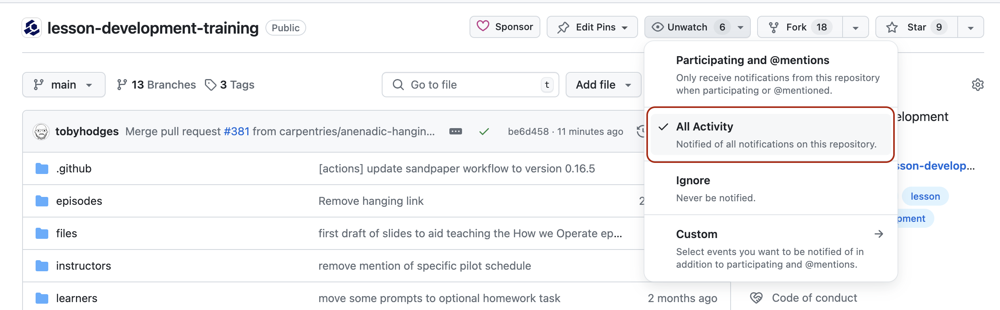

Collaborating with Newcomers
Last updated on 2025-07-16 | Edit this page
Overview
Questions
- What makes a project welcoming for newcomers?
- What information should I provide about the project to potential collaborators?
- How can I ensure regular progress on lesson development?
Objectives
After completing this episode, participants should be able to…
- Adjust a lesson repository to attract potential new collaborators.
- Create and modify issue and pull request templates in GitHub.
- Identify strategies to encourage regular development and maintenance of a lesson.
You may start working on projects by yourself or with a small group of collaborators you already know, but open source projects in the Carpentries community often grow beyond that small group. Community collaboration is the cornerstone of The Carpentries - all curricula and various programmes are developed together by the community members across borders, domains and backgrounds. Most initiatives are done through community consultation and collaboration is used as a pathway to empower people, give members a sense of purpose in the community and realise shared goals.
Collaboration helps bring different perspectives to solving a problem and share the load of the required work to develop, pilot, and, later on, maintain the lesson. People drop in and out of projects for various reasons and their levels of involvement may vary over time due to other commitments - for this reason it is worth taking time from the outset to make a project welcoming for newcomers in order to achieve a steady number of people working on your project at any time. You should plan to make it easy for new collaborators to join, to set up a local workspace so that they can contribute, help them find tasks so that they know what to contribute, and make the contribution process clear so that they know how to contribute. You also want to make it easy to give people credit for their work on your project as well as for others to reuse and give credit to your project. In this episode, we cover best practices for collaborating with newcomers and tools available to help. And remember, anything you do to make it easier for newcomers to contribute will be universally useful for all collaborators.
Documenting Your Lesson
For collaborative projects, it is important to spend the time on ‘external-facing’ features, such as documentation, to make the project as welcoming and as easy to get involved in as possible for newcomers who may not have a deep grasp of the project or know all its existing problems. Such documentation will be useful to yourself and other team members as well, e.g. if you are trying to come back to the project after a break or are reusing it for a new collaboration in the future.
Your lesson documentation should contain the following information, which should be kept up to date.
Description of the Project - README File
README, README.txt or
README.md is a plain text or Markdown file located in the
project’s root directory representing the default landing or home page
for repositories in GitHub (and similar project repositories) by
convention. It represents the first piece of documentation that people
will see when visiting your lesson repository, hence it should concisely
explain what the lesson is about and who it is for, and contain links
and pointers to further information. For example, README
should include:
- lesson title
- lesson description
-
rendered version of the lesson - even though this
is typically included in the
Aboutsection of the repository, it is always useful to link to the URL where the rendered lesson is available - contact information - include up-to-date email addresses or mailing lists or other details on how to get in touch with the lesson maintainers
-
contributing information - this is an opportunity
to list what kinds of contributions are sought (and what are not) and
how to get involved in lesson development for new contributors. You can
provide more details in a separate
CONTRIBUTINGfile within the repository’s root directory and link to it fromREADME -
credits/acknowledgements - make sure to credit
those who have helped in the lesson’s development or inspired it, and/or
any resources/templates that you have reused. You can also link to a
separate
AUTHORS.mdfile within the repository’s root directory to list all the people who contributed to the lesson content (if this list starts to become too large to include in theREADMEitself) -
citation - a convention is to include the citation
information for your lesson in a separate
CITATIONfile within the repository’s root directory and link to it fromREADME.mdso others can cite the use of the lesson in their own publications and media and it can also be automatically discovered by other applications. TheseCITATIONfiles are discussed in more detail below. -
license - a short description of and a link to the
lesson’s license typically contained in a separate
LICENSE,LICENSE.txtorLICENSE.mdfile within the repository’s root directory. The lesson repository created from the Carpentries lesson template already contains a defaultLICENSE.mdfile, but you should modify this to more accurately describe how the lesson content can be re-used by others.
Helping People Cite Your Lesson
The default citation file for new lessons using The Carpentries
Workbench is CITATION.cff, in Citation
File Format (CFF). CFF is defined using YAML (which we already
encountered in the config.yaml file for the lesson website)
and is the
recommended way of storing citations in GitHub. If your lesson
repository contains a CITATION.cff file, GitHub will
automatically show the citation information in the sidebar, making it
more visible and accessible for visitors to your repository. CFF is also
recognised and supported by other platforms including Zenodo and the Zotero reference manager.
The CITATION.cff file for newly-created lessons contains
only placeholder information, which should be replaced with relevant
details for your project as soon as practical. Citation information can
also be contained in a plain text file (CITATION,
CITATION.txt) or a Markdown file
(CITATION.md). In all cases, it is up to the lesson
developers to decide what information to include in their citation
file.
Digital Object Identifiers
We recommend that you obtain a Digital
Object Identifier (DOI) for your lesson as soon as feels
appropriate, at the latest when the lesson reaches the beta phase. You
can use this DOI in the citation information (e.g. in
the identifiers field of your
CITATION.cff), to allow people to cite a particular
version of your lesson, e.g. a snapshot of the lesson when it entered
beta testing, captured as a Zenodo record.
Instructions for Contributors - CONTRIBUTING File
CONTRIBUTING, CONTRIBUTING.txt or
CONTRIBUTING.md is a text or Markdown file within the
repository’s root directory where you should provide detailed
description of the ways people can send their contributions, what kinds
of contribution will be credited and in what ways. For example, at what
point would someone be listed as an author and how you will credit
contributions that are not recorded in the commit history of the
project. The latter is particularly important for newcomers who may not
be proficient with the use of GitHub’s features for collaborative work,
such as issues, mentions, pull requests and code review, but could still
provide valuable input and contributions.
Carpentries lesson repositories already have a generic Carpentries
CONTRIBUTING.md file to get you started. You should review
it and, if need be, modify it to fit your team’s needs and way of
working. For example, you may want to expand on what contributions you
are not looking for if your lesson already contains more
material than can be covered in a typical workshop. You can also detail
all channels on which you are willing to receive contributions on, if
they are different from the defaults included in the file.
Issue and Pull Request Templates
Consider setting up issue and pull request templates to help newcomers who may not have much experience working on collaborative projects in GitHub. Such templates can provide a structure for the issue/pull request description, and/or prompt them to fill in answers to pre-set questions. Both can help contributors raise issues or submit pull requests in a way that is clear, helpful and provides enough information for maintainers to act upon (without going back and forth to extract it). GitHub provides a range of default templates, but you can also write your own.
Other Documentation
Once you have set up the basic documentation about your lesson, you may consider adding the following useful information to your documentation too:
- set-up guides for installing and rendering the lesson locally. In most cases, a link to The Carpentries Workbench documentation will be sufficient. You can also contribute to the Workbench documentation to help improve it for the community.
- how to create and modify the pages in the lesson
Templates for collaboration
We have prepared the following templates to help you get started with writing the README and contributing guide for your project:
Exercise: preparing your repository for collaboration (15 minutes)
Spend some time doing one of the following:
- Modify the
README.mdandCONTRIBUTING.mdfiles in your repository to provide the relevant information for would-be contributors to your lesson:- the name(s) of the current developer(s), linked to their GitHub profile(s) (README)
- contact information (README, CONTRIBUTING)
- guidance on how people should contribute, and what kinds of contribution you are most interested in receiving (CONTRIBUTING)
- links to any important background information (README)
- links to any funding bodies or host institutes that are supporting the development of the lesson (README)
- Create a new issue or pull request template, or modify an existing one, to guide contributors on how best to begin collaborating with you on GitHub.
- Using the
cffinitwebtool, create aCITATION.cffwith information appropriate to your project (listing authors, including the lesson title, repository URL, etc) and overwrite the current placeholder content with the result.
Groups of collaborators taking this training together should discuss first how they will assign these tasks between them.
Collaborating on a Lesson
Boosting the Visibility and Attracting New Collaborators
In addition to having the complete documentation in the lesson repository, The Carpentries community provides a number of ways to further raise the visibility of the lesson among the broader community and encourage community members to contribute to its further development. For example:
- listing issues from the lesson repository on The Carpentries Help Wanted page
- featuring your lesson in the Incubator Lesson Spotlight
- writing a blog post about the lesson for The Carpentries Blog, and/or attending a community discussion call to promote the lesson
- advertising the lesson at various Carpentries mailing lists - e.g. general discussion, instructors, regional communities or specific curriculum lists
You should also consider organising and advertising “lesson sprint”/“collaboration drive” events where you can help newcomers get started as contributors to your project, and/or including such a session in the programme of existing events (e.g. as an interactive session at a conference/community meeting). The Carpentries community handbook includes a set of recommendations for organising and running a lesson sprint.
Issue Labelling for Newcomers
You can encourage contributions to your lesson from newcomers by
using specific labels on issues to highlight suitable opportunities to
help. Apply the good first issue or
help wanted labels to issues in your repository to indicate
that the maintainers will particularly welcome help or pull requests
fixing such issues.
Noticing When Something Happens
In addition to Mentions, GitHub implements a comprehensive notifications system to keep you up-to-date with activities in the lesson repository so you can react in a timely manner. Check out GitHub’s documentation on setting notifications on individual repository. You can choose whether to watch or unwatch all events on an individual repository, or can choose to only be notified of certain event types such as issues, pull requests, mentions, etc.
If you work on multiple projects, or the projects you follow on GitHub are particularly active, the volume of notifications you receive can quickly become overwhelming. Here are some approaches you can take to help you stay on top of things, and distinguish the high-priority tasks and important updates from the regular traffic.
Email Notifications
If you want to filter, organise, and redirect email notifications from GitHub, here are some characteristics of the messages that you make use of:
- All GitHub notifications are sent from the address
notifications@github.com. - Notification emails are sent to the address
repo-name@noreply.github.com, whererepo-nameis the name of the repository where the notification was triggered. - The email subject begins with
[org-or-user/repo-name], whereorg-or-useris the name of the organisation or the username of the user who owns the repository andrepo-nameis the name of the repository where the notification was triggered. - In addition to your email address, the cc field of the message
contains an address that describes the type of event that triggered the
notification, e.g.
author@noreply.github.comfor activity on an issue or pull request that you opened,mention@noreply.github.comfor a mention of your username, orteam-mention@noreply.github.comfor a mention of a team you are a member of, etc. - The email header (metadata) includes a
mailing-listfield with an identifier in the formrepo-name.org-or-user.github.com, which can be used to filter by the project and/or its owner.
Most email clients provide configuration for rules that can be set to redirect messages to particular folders, and/or to annotate them with a mark or flag, based on this kind of information. Here is the documentation for setting such rules in Gmail.
Notifications on GitHub.com
The alternative to using email to keep track of project activity is to manage notifications on GitHub. Adjust how you receive notifications in the Notifications section of your account settings. When logged in, you can visit https://github.com/notifications to see notifications for your account, presented as a table. Through this interface, you can:
- group notifications by repository.
- see notifications for a particular repository.
- see particular types of notification e.g. mentions, issue assignments, etc.
- create more sophisticated filters using the search bar, e.g. all mentions for all repositories in a particular organisation.
The account notification settings allow you to specify certain types of notification that should be sent by email, while everything else is collected in the web interface. Whatever strategy you choose, one of the most important habits that will help you stay on top of your projects and tasks is to remember to check these notifications frequently.
Notifications for Your Lesson Repository
As a collaborator with edit access to the repository, your
notification settings on the lesson repository should already be set to
All Activity.
You can review the level of communication you will be receiving about activities in the repository by clicking the ‘Unwatch’ button on your repository homepage: the dropdown menu will show you a range of options for the different kinds of events that you will be notified about on the repository. ‘All Activity’ is a great choice to begin with because it will ensure that you do not miss out on any changes/events.
As the time progresses, feel free to revisit this setting to adjust the level of notifications to the right level for you.

Saying “No”
Not every contribution is a good fit for a project and, especially as your lesson becomes more stable, you probably will not want to accept every suggested change. If you receive a pull request or issue that does not fit to your lesson, consider the following points to help you politely decline without demotivating the contributor from contributing to your lesson (or another open source project) again:
- Thank them for taking the time to contribute.
- Explain why the contribution does not fit into the lesson, and offer suggestions for improvement if you’re able to.
-
Link to relevant documentation, if you have it.
Notes about the design of the lesson (e.g. from this training) and any
relevant discussion threads can be very helpful here. If you notice
similar repeated requests/contributions, you might want to address them
in your documentation (e.g. in the
CONTRIBUTING.mdfile) to save yourself time in future. - Close the request.
The advice above is taken from The Carpentries Maintainer Onboarding curriculum. That resource, and the Best Practices for Maintainers guide from GitHub on which it is based, make excellent further reading as you prepare to transition from your role as an active developer into another as a responsive and responsible maintainer of your lesson.
Making Progress
The following practices have been shown to help maintain steady progress with lesson development:
- being responsive to notifications about activities and mentions
- scheduling regular co-working/sprinting sessions with team members (e.g attaching your sprint sessions to other open source community activities, which may offer goodies, rewards and prizes for participants, can provide motivation and activity spikes)
- working alongside other members of The Carpentries community at Maintainer or lesson development co-working sessions
- blocking time in your calendar for issue triage/solo material writing
- planning lesson pilots in advance to help set targets
Make sure to join the Incubator lesson developers mailing list to keep an eye on announcements and discussions relating to lesson development in the Carpentry community.
Exercise: planning to collaborate (10 minutes)
Use this time to plan how you will continue to make progress with developing your lesson, and ensure that you are ready to respond to external contributors when they arrive at your lesson. This time is yours to do with as you think is best for yourself and your project, but you might consider using it to do one or more of the following:
- schedule a lesson development co-working session with your collaborators, and/or mark the next community co-working session in your calendar.
- ensure that your the notification settings are appropriately configured for your lesson repository.
- contact The Carpentries team to ensure issues from your lesson will be included on the Help Wanted page.
Recommended Reading
Here are some additional resources where you can learn more about encouraging newcomers to get involved with your Open Source project:
- Ten simple rules for helping newcomers become contributors to open projects by Dan Sholler, Igor Steinmacher, Denae Ford, Mara Averick, Mike Hoye, and Greg Wilson
- The Contributor Experience Handbook, especially the following sections:
- “If a project doesn’t make a good first impression, newcomers may wait a long time before giving it a second chance” - Karl Fogel, the author of “Producing Open Source Software: How to Run a Successful Free Software Project”.
- You should make an active effort to attract potential collaborators and try to make them all feel welcome and included. The Carpentries Help Wanted page and featuring in the Incubator Lesson Spotlight can boost the visibility of your lesson. Creating the appropriate documentation and using GitHub features such as labels, and issue/pull request templates will help lower the barriers for contributions to your project.
- When you design your lesson with new contributors and increased accessibility in mind, you make things better for everyone in the process.
- Scheduling regular co-working sessions, blocking time in the calendar for issue triage, and setting and being responsive to GitHub notifications will ensure regular progress on the lesson.